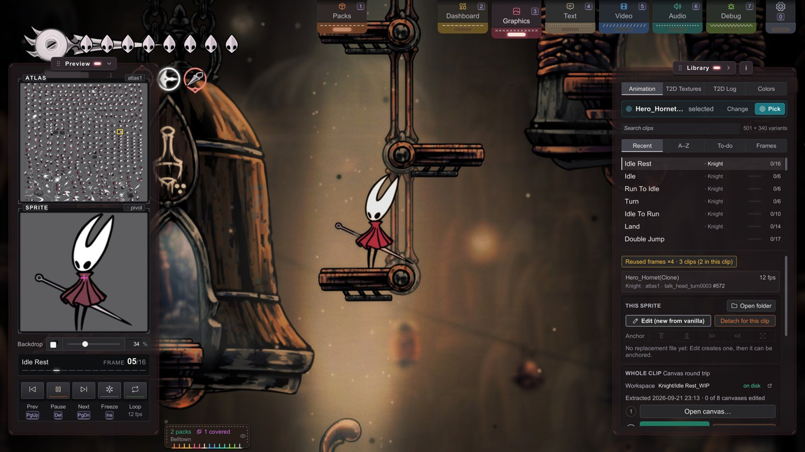
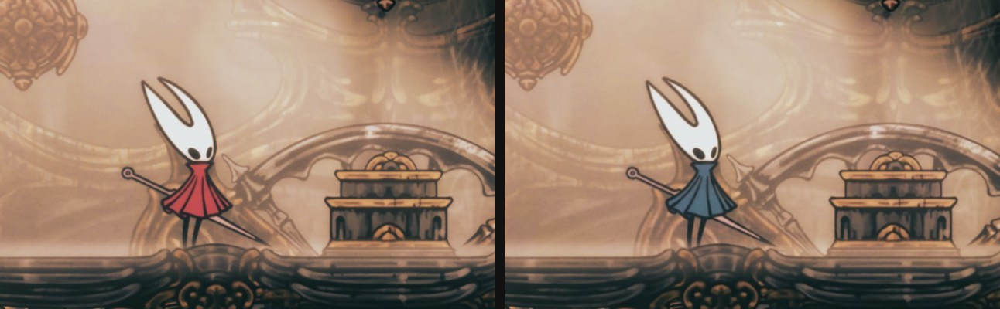

B1 Starting a Skin Pack
Sprites · for creators.
Your first hands-on session.
Dump a real frame of sprite animation, repaint it, save the file, and see it change live in the game.
Then fold your art into a shareable pack.
This demo takes about 10 minutes. You need an image editor that handles PNG.
It shouldn't feel like a boss runback. 😉
You'll be able to:
replace a sprite end-to-end — find it, edit it, see it swapped in-game a moment later — and turn loose edits into a toggleable pack.
Every other sprite in the game works the same way as your first edit.
Before you start: complete Module A, so the folder rules don't feel arbitrary.
You need Stitchwork running, a save loaded, and Hornet on screen.
We'll recolor the cloak bright blue on one frame of Hornet's idle animation clip.
The example uses real names from the live game. Check them against your identity card (Step 2).
Heads-up before you invest: this page teaches the single-sprite loop, which is all you need for props, poses, and touch-ups. To re-draw whole animations, a dedicated animation workflow exists: Choosing a Workflow has the map of every workflow.
Step 1 — Open the Animation mode
Open Graphics: press 3 (the top-row key; Hotkeys has your build's exact key). Or click the Graphics pull tab at the top edge of the screen. Two panels open: Preview at the left and Library at the right. If the key does nothing, a text field has keyboard focus or Stitchwork is giving way to DebugMod's GUI menu.
In the Library's mode row, choose Animation. That mode covers the entire tk2d world. The list under "Or choose one the game has animated this session:" shows each object whose animation played since the scene loaded. Each row has the GameObject name, a thumbnail and a clip · frame/count line. Pick object in world, above the list, lets you point at the object instead (B2).

Step 2 — Find Hornet (her files say "Knight")
Hornet's entry is pinned to the top of the object list. Its name is:
Hero_Hornet(Clone)Click it. The Library moves to Hornet's clips: the picked row ("Hero_Hornet(Clone) selected", with Change and Pick), Search clips, the sort row, the clip list, and the console under it. Type idle in Search clips and click the Idle row. Hornet plays that clip and stops on its first frame, so she does not have to stand still. (Press Pause, Insert, to give her animation back to the game.)
To choose a frame, use the Preview panel: click or drag along the ticks of the frame strip, or use Prev and Next (PageUp / PageDown). The console's identity card shows the frame's path in one line, with the three names you'll use constantly:
Knight › atlas2 › idle0000 #<sprite number>- Collection —
Knight - Material (the atlas) —
atlas2 - Sprite —
idle0000
Yes: Knight, not Hornet. Silksong inherited Hollow Knight's internal names, so Hornet's sprites live under Knight. This trips everyone once — now it won't trip you. (More such aliases in the Chinese glossary.)
Read these names from the identity card, don't memorize them. The material is
atlas2for this idle today, but indices shift between game versions. The identity card is always right; a guide is only right until the next patch.
Step 3 — One click to start editing
In the console's This sprite group, click Edit (new from vanilla). That one button does three things: dumps the vanilla frame to disk, copies it into your working folder, and opens the PNG in your image editor (the system default, or the one you chose as Image editor in the Overview panel). Once the file exists, the same button reads Edit (opens your file). You're now looking at the exact art the game is drawing, in an editable file the game is already reading.
If that opens a viewer instead of your editor, open the Overview panel (2) and set Image editor to your program. Leave it empty to keep the system default. On Windows, when the editor that you set is already open, Edit brings its window in front of the game.
The file landed in your working folder: the Stitchwork/ folder in the game folder, beside Packs/. It is good for prototyping, and mod-manager updates never touch it. Its files apply unless an active pack has its own file for the same sprite (packs come in Step 6).
<Game folder>/Stitchwork/Sprites/Knight/atlas2/idle0000.pngTo get every frame of the clip at once, see Step 7.
Step 4 — Repaint it
Recolor the cloak bright blue (#0080FF). Hornet's original cloak is red, so blue makes the change easy to see. Change only the cloak's color: keep its transparency, the background, and the rest of the sprite unchanged. Use this clear color difference to check that your replacement loads before you make detailed edits.
Three rules when you save:
- Same size or bigger, never smaller. Larger replacements are fine — Stitchwork grows the atlas to fit (and anchors control where the extra room goes). A smaller file is stretched to the original size, and it blurs.
- Keep the alpha. Transparent stays transparent; don't flatten onto a background.
- Save as PNG. JPG has no alpha and will fringe every edge with compression mush.
Save over the file in place — same path, same name.
White specks around the edges of your art? Clip Studio Paint saves white under the transparent pixels of a PNG. The game blends that hidden white into the edges of your art when it draws them. Clean sprite edges (CSP fix) removes the specks in the game, and your file does not change.
The switch is in Settings › Rendering (
0), and it is on by default. To clean the files themselves, use the Pack Doctor (Step 6). Troubleshooting explains why the specks appear, and how to soften them in your art program.
Step 5 — See it live
Switch back to the game. A moment later, the file watcher catches the save and composites your art onto the live atlas. The cloak on the idle frame you edited should now be bright blue instead of red.
edit PNG → save → watcher → reload → composite → on screen (no restart)If you let her play again and she's mid-jump or off-screen, walk back and forth until she idles — the replacement only shows on the frame you painted.
Is the cloak still red? First read the message at the bottom center of the screen. Applied means the game drew your file. Partly applied or Not applied marks each file that the game did not draw as "not drawn". For a "not drawn" file, the name or folder does not match, or that collection is not loaded in this scene. Next, go through the three questions in When Something Looks Wrong. The cause is almost always the path or the sprite system.

Step 6 — Make it a real pack
Right now your edit lives in the working folder: you can't switch it off, and you can't share it. Promote it to a pack — a self-contained folder the Pack Manager can switch:
- Make a pack folder in the global Packs folder
<Game folder>/Packs/. Put aStitchwork/subfolder inside it. This is the same shape that a Thunderstore install uses:<Game folder>/Packs/my-hornet-skin/Stitchwork/ - Recreate the asset path inside it and move your PNG there. Here is the same frame in the dump, in your working folder, and in your pack, from the game folder:
(The folder underStitchwork/Dumps/Sprites/Knight/atlas2/idle0000.png Stitchwork/Sprites/Knight/atlas2/idle0000.png Packs/my-hornet-skin/Stitchwork/Sprites/Knight/atlas2/idle0000.pngStitchwork/mirrors the working folder exactly.) - In-game, open Packs (the Pack Manager): press
1, click the status badge at the bottom left, or click the Packs pull tab. Each pack is a card. Your pack is there — but off, like every new pack. Click the switch on its card. Then click Apply at the bottom of the panel. Not listed? Click Rescan at the top.
Every mod-manager profile sees the Packs/ folder, and updates never touch it. A pack folder under BepInEx/plugins/ also works: that is where Thunderstore installs land. Packs and the Graphics panels take turns: the one you opened last stays.
The bright blue cloak now loads from your pack. You can change the pack's priority and share it with a friend.
Push and Pull
Your working folder is where you edit. A pack is what you share. Two buttons in the Overview panel (2) copy files between them. If you know Git, the names point the same way:
- Push sends your work to the pack.
- Pull brings the pack's files back to your working folder.
Before the first Push: make the pack folder, then choose it as Target pack: in the Overview panel.
Push copies your working folder's sprites, sheets, sounds, videos, text, fonts and recolor files into the pack, in the same folder shape. A file with the same name in the pack is overwritten. Push never deletes a file from the pack. A line under the buttons counts the result: new files, overwritten files and skipped _WIP files.
Push copies; it does not move. After a Push, your working folder still has its copy of the blue sprite, and two copies now exist:
- The pack's copy wins while the pack is on. So after each edit, push again, or switch the pack off while you work.
- With the pack off, you can still see blue. The working copy shows in place of the original red cloak. To check the pack's on/off result, first move the working copy out of
Stitchwork/Sprites/. Then switch off the other packs that replace this sprite.
Pull goes the other way, from the pack to your working folder:
- Pull (merge) copies the pack's files beside your own. A file with the same name in your working folder is overwritten.
- Pull (replace) empties your working folder first, then copies. It asks for a second click.
Pull is also a good way to start from somebody's pack. It works from a Customizer skin too, but Push to a Customizer skin is off: Stitchwork never changes a Customizer skin's folder.
Folders whose name ends in _WIP are your canvas workspaces. Push and Pull never copy them, and Pull (replace) does not delete them. The colored dots in the Overview's file lists show the state of each file: loaded, pending or on disk.
Before you share
Two optional touches before you share it. The stethoscope button on the pack's card (tooltip "Check this pack: writes a Pack Doctor report and opens it") runs the Pack Doctor and opens its report. When the report finds PNGs with white under their transparent pixels (see Step 4), the Pack Manager offers Back up, then clean. It copies each PNG that it changes to Backups/clean-edges/ in your working folder, then cleans the file. A cleaned file shows no specks for any player, whatever their settings.
Put a cover.png of 1280 × 400 pixels in the pack's Stitchwork/ folder, and the Pack Manager shows it on the pack's card (Pack cover).
Have Customizer skins?
Skins already installed under the game's …_Data/Mods/Customizer/ folder are detected automatically and appear in Packs with a shirt icon on the card (tooltip "A Customizer skin") — no restructuring, no renaming, files untouched (Push is off for them; Pull still works). (If the Customizer plugin itself is still installed, remove it: the two mods change the same textures, and they conflict.)
This also works for Customizer skins installed through a mod manager — those land under BepInEx/plugins/ where Customizer never looks, but Stitchwork recognizes them by the active.txt file creators bundle in the zip. Their shirt icon's tooltip reads "A Customizer skin under plugins/, outside Customizer's own folder". If a mod-manager-installed skin doesn't show up, check that its folder has an active.txt at the root — create an empty one if not, and click Rescan.
Stitchwork also reads the flat skin shape. Some Thunderstore skins keep all files in one folder, with no subfolders. Stitchwork loads the sactx-*.png sheets, the named texture files, and the video files from that folder. One limit: a flat atlas0.png names a tk2d atlas but not its collection, so Stitchwork does not apply it — the log records each skipped file. To use that art, move it to Spritesheets/.
Step 7 — The rest of the animation, and beyond
You changed one frame; the clip has several. Ready N sprites for edit (under "Frame by frame" in the console's Whole clip group) gives you them all at once. It copies the vanilla PNG of each distinct sprite to Sprites/Knight/atlas2/, keeps the files you already have, and opens the folder. It won't hand you a reused frame twice. Use the same bright blue on each frame's cloak if you want the whole idle animation to match. Each filename is the sprite's in-game name (idle0000, idle0001, …); match the name and Stitchwork finds it.
For a whole clip, the stronger path is the animation canvas workflow (B6): every frame lands on one aligned, onion-skinned canvas, and Compile back splits it into sprite files, with placement and anchor tags handled for you. Frame-by-frame dumping stays fine for touching up one or two sprites.
The same shape — find the name, drop a file at the matching path — is the whole framework:
- Sounds →
Sounds/{ClipName}.ogg - Text → the Dialogue Editor writes the YAML for you (Text & Dialogue)
- Video →
Videos/{CinematicName}.mp4
What you've internalized
- Path is identity. A PNG at the right
Sprites/is the replacement — no import, no build.Collection/ Material/ Sprite.png - Hot reload shows a save a moment later. Only a new Stitchwork version and a few settings marked restart need a restart.
- A pack is just a folder. Many coexist; the Pack Manager decides who's on and who wins.
- The identity card is the source of truth for names — and the game calls Hornet
Knight.
Your skills are impressive. My needle sings from your care. But I must ask, can the blade be honed further?
Belltown · PINSMITH_QUEST_OFFER
Next
- A sprite isn't in front of you in the Animation mode → Finding Any Sprite
- Every control of the Animation mode → The Animation Mode
- Replacements that grow past the original → Bigger Art: Anchors
- Ready to share → Distributing Your Pack